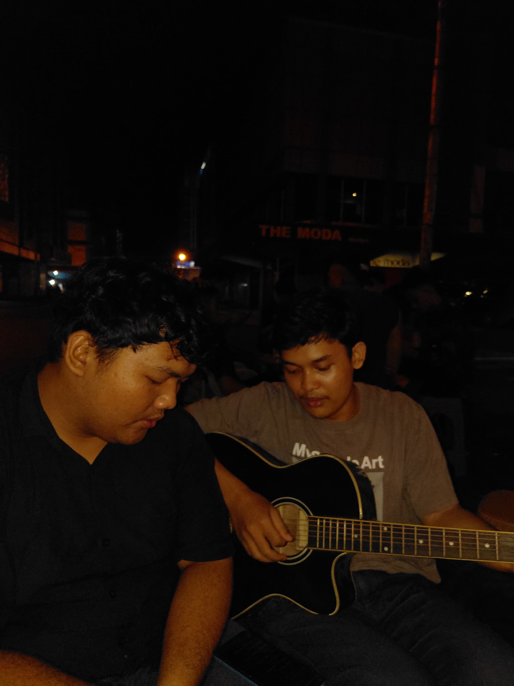
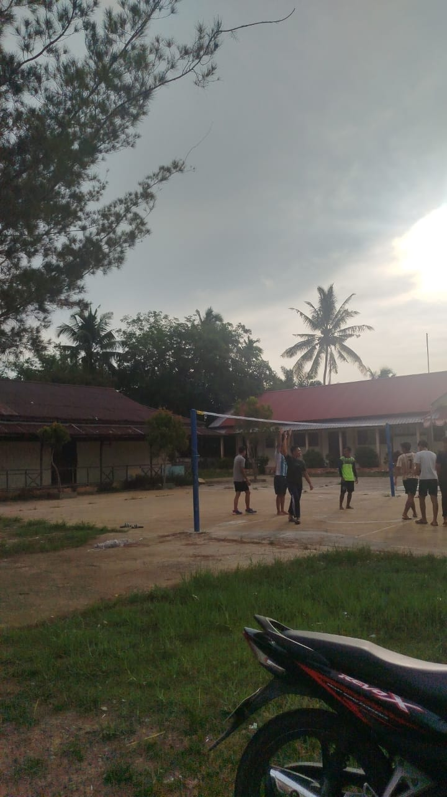

Kegiatan Rizqi Ikhwani
 |
Kegiatan Sehari-hari Rizqi Mendengarkan maupun memainkan musik di kala senggang menjadi cara terbaik bagi saya untuk merilekskan pikiran dan mengusir kejenuhan dari rutinitas harian. Saya sangat menyukai musik karena alunannya mampu memperbaiki mood, mengasah kreativitas, serta memberikan ketenangan emosional yang menyegarkan. Selain itu, musik juga menjadi media yang asyik untuk saling berbagi selera lagu dan mengekspresikan diri bersama teman. |
 |
Kegiatan Akhir Tahun Bersama Teman Bermain voli bersama teman-teman di kampung halaman saat libur akhir tahun menjadi cara favorit saya untuk mengembalikan kebugaran sekaligus melepas penat. Saya sangat menikmati olahraga ini karena selain melatih skil dan kekompakan tim, tiap umpan dan tawa di lapangan selalu menghadirkan keseruan yang tak ternilai. Lebih dari sekadar menjaga fisik, momen main voli di desa ini menjadi sarana hangat untuk melepas rindu, merawat keakraban, dan merayakan kebersamaan dengan teman-teman lama. |
| Kembali ke halaman utama | |